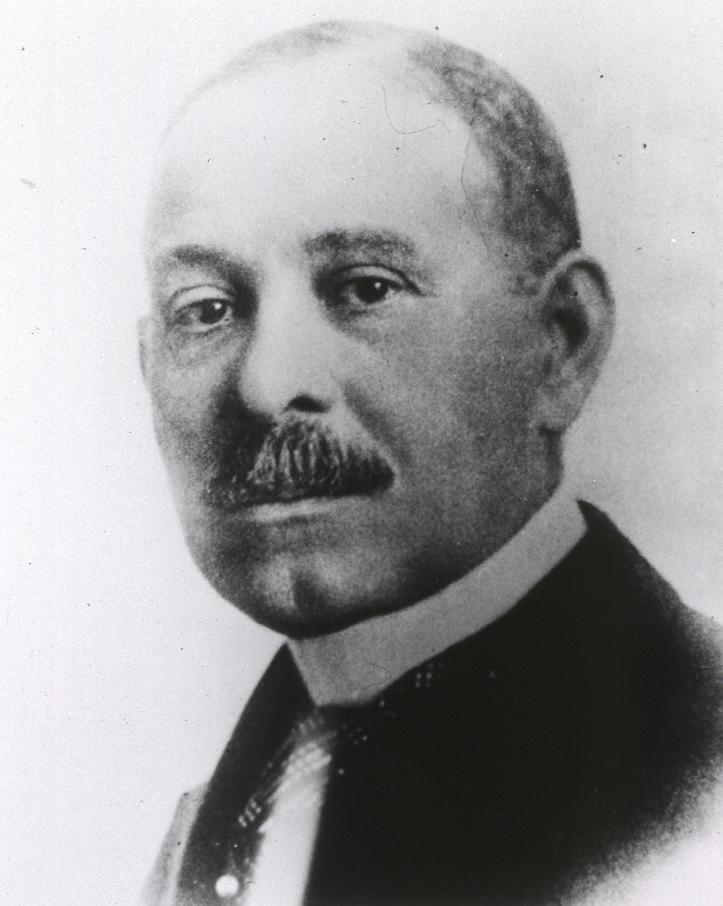
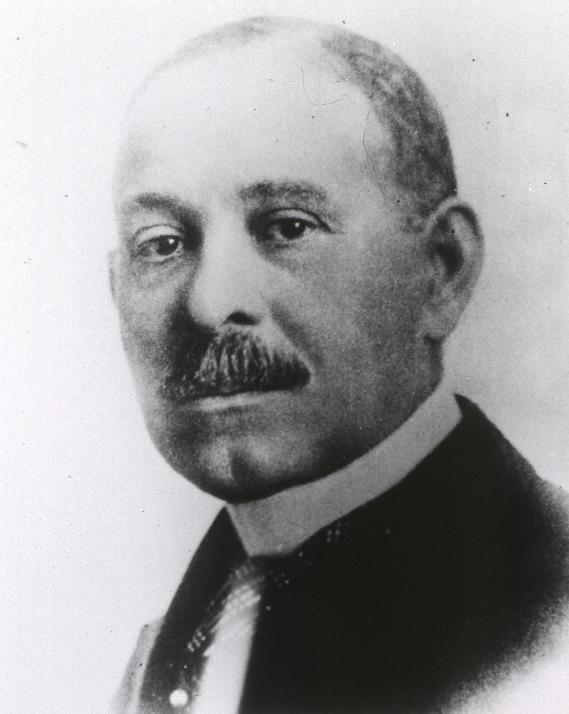

In spite of rampant racial and medical bias, Daniel Hale Williams, an African-American medical pioneer, instigated an ongoing movement to chip at these barriers. By creating Provident Hospital, America's first interracial hospital , Williams served the African Americans’ need for healthcare education and medical care. By also performing the first open heart survery , Williams set surgical standard globally. To ultimately support the overaching Civil Rights Movement, Williams created the National Medical Association, an organization that advocates for the black community's medical needs even today.
Daniel Hale Williams and his historical accomplishments inspire me -- in spite of the structural, systemic barriers he faced due to inherently prejudiced Jim-Crow Laws and Black Codes, he was still able to progress as a leading cardiologist of the time. He makes clear the centrality of continuing to pursue one's dreams even admidst adversity, inspiring me to apply his ideologies in my life and when trying to overcome any obstacles that I may personally face.
1891. In 1891, Daniel Hale Williams opened up Provident Hospital and Nursing Training School. During the first couple of years, the hospital struggled financially, yet with William’s innovative heart surgery in 1893, Provident soon attained national attention. The reason why Daniel Hale Williams created Provident Hospital was because he observed how Emma Reynolds,a nursing student, had been turned down from training experience solely due to the color of her skin. However, with Provident, she was able to get quality education, showing the vast influence Daniel Hale Williams has had on the black community.
1895. In 1895, Daniel Hale Williams expanded nationally, co-founding the National Medical Association(NMA). The organization was founded in a time of extreme racial division, seen both politically and medically. Upon its creation, the organization sought to support existing Black physicians, who had been denied entry to the American Medical Association and to encourage other African-Americans to join the medical field. Through this organization, Daniel Hale Williams advocated for Black Hospitals, creating countless training institutions, many of which still continue to serve the Black community today.
1893. In 1893, Daniel Hale Williams conducted the first open-heart surgery (pericardial surgery to be precise) on James Cornish, a man who had been stabbed in the heart. During the era, open-heart surgery was viewed as extremely risky, and very few doctors engaged with the procedure. Nonetheless, Daniel Hale Williams began operating on the man’s body, sewing the man’s heart together -- Cornish then continued to thrive for the next twenty years. This medical surgery was pivotal in African American history, as it proved to the nation the capabilities of African Americans in the medical field and set a foundation for other African-American doctors.